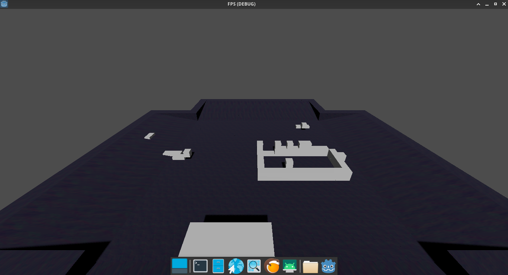

WHAT IS THIS ?
INJECTED BUILD AND BREAK FPS Made by Neckfire Copyright : Neckfire Team 2023-3-9 Table of content 1)Presentation 2)Party 3)Rules 4)Items Presentation Injected is a game developped by Neckfire in 2023, it’s a «Hide and Seek building FPS», thats mean it’s a FPS (First Person Shooter) where you can build (here some object like stairs and platform) and the goal is to hide for the blue team and to find and kill them for the red team. This game is the result of hardwork of Neckfire, and the idea went by making a drone simulation game, then a car simulation, and by accident an FPS. The idea come from a bug where looking at walls placed an object. And at this moment, the idea of an FPS where you can place object came. The game is made with godot, Neckfire have choose this game engine beacause of his open-source philosophy witch is really apreciated by Neckfire related to the GNU/Linux environment (refer to Arpon OS to get more information). Godot is a cross-platform, free and open-source game engine. The development environment runs on multiple operating systems including Linux, BSDs, macOS, and Microsoft Windows. It is designed to create both 2D and 3D games targeting PC, mobile, and web platforms and can also be used to develop non-game software, including editors. Development of Injected started in March 9, 2023 (no actual release date). The game is entirely made by Neckfire, or at least by IA for texturing, thanks to OpenAI : Dall-E. Injected party : 1.PREPARATIVE : 2,5min to build a territory (blue) and find bonus items (red) 2.GENOCIDE : 7,5min to kill the blue team (red) 3.TEAMS of 10 players max. 4.team switch every round 5.the winner is all blue player alive at the end of the party or the entire red team if they killed all the blue team. The objective is to hide for the blue team, and to search for the red team. During the preparative lap, blue team objective is to build a map from a base (generated at every new party) and then the genocide time, to hide from the red team. Blue team can make the choice to fight the red team, but they have double HP and possibly a longer reach due to the bonus items they find in the preparative lap. Ingame team chat permit the players to comunicates and establish strategies (build a big bunker, fight all the red team together or trap them) The map will be made to have some missing chunks to make traps. The red team need to earn a maximum of bonus items in the preparative lap to get more advantages in the genocide lap. They also need to find out where the blue team is hiden in the genocide lap to prevent using all their breaking capacities. Rules |Building capacities : Blue can only build and break in their area. |Breaking capacities : Red can break up to 40 objects. |Reach is limited to 10 meters. |Unlimited object for blue team in the lap of the preparative, and limited up to 35 object in genocide. |The red team between the lap of the preparative can earn bonus to increase reach, speed and jump. |Dead players can interact into the game by earning bonus to blue team. they can also break one chunk per party. |Red team can lose by having not found every blue in the genocide lap, but also by falling of the map. They can also get killed by the blue team, but they are normally buffed to be stronger than them. |Each kill gives you XP, and every level represent a quantity of money you can use ingame. Items
Game in developement...
You can download it here :
For Linux in : x86_64 For Windows in : EXE You can also try it online (DEMO)